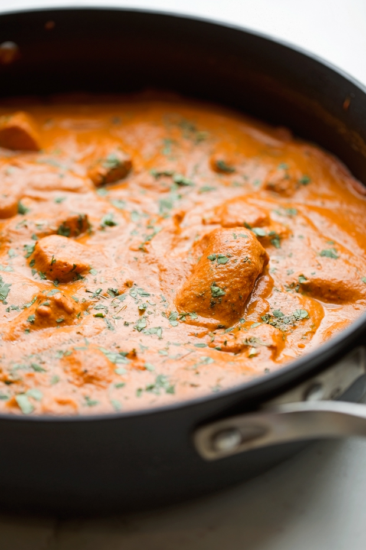

Butter chicken, Murgh Makhani, recipe
Home

Description
It's authentic, restaurant-style butter chicken, for reals. I just took the liberty of tweaking a few things to make this recipe attainable for us everyday people. I promise you all tweaks are simple and don't compromise the flavor!
Ironically enough my recipe doesn't contain that much butter. Butter chicken is also called 'Murgh Makani' and when translated to English, it means Butter Chicken. And in fact, the butter in this recipe is actually clarified butter or ghee.
Ingredients
- Chicken: Feel free to use boneless skinless chicken breasts or boneless skinless chicken thighs for this recipe. I typically cut the chicken into 1½ inch pieces and then toss it in a marinade made with yogurt and spices.
- Seasonings: Butter chicken calls for an array of spices. To help curb the ingredient list, I use a sachet of tandoori masala. Don't get me wrong, you'll still need a little garam masala, cumin powder, coriander powder, and some red chili powder. You can also swap the red chili powder for cayenne but the flavor will be slightly different. I also find cayenne pepper to be hotter so I would suggest using slightly less than what's called for. But you won't need ground turmeric and a few others as the tandoori masala already contains these. Garam masala is South Asian spice mix that contains ingredients like cloves, black pepper, black cardamom, cinnamon, green cardamom, and several other spices.
- Fenugreek Leaves: In Urdu and Hindi fenugreek leaves are called kasuri methi. This is an ingredient you can easily find in almost any South Asian grocery store as it is used in many dishes. If your mainstream grocery store has an international aisle, they may carry it there as well
- Fresh Ginger and Garlic: A lot of traditional Pakistani and Indian recipe call for freshly prepared ginger and garlic paste. Essentially, it's just a combination of peeled knobs of ginger and a handful of cloves garlic broken down in a food processor with a little vinegar to help keep these ingredients fresh and some water. Some people also add a little oil for preservation, but this is optional. Nowadays, most South Asian grocery stores (as well as mainstream stores) sell prepared garlic and ginger paste. Feel free to make your own or purchase it for this recipe.
- Oil: You'll need some oil to saute the onions and cook the butter chicken recipe. Feel free to use avocado oil, canola or even coconut oil for this.
- Yogurt: I like to use plain yogurt for this recipe. My mom has always taught me to beat the yogurt with the seasonings before adding the chicken pieces to ensure that the flavor disperses evenly throughout the chicken pieces.
- Ghee: We'll use ghee (also called clarified butter) to prepare the butter chicken sauce for this recipe.
- Crushed Tomatoes: I use a can of crushed tomatoes for my butter chicken recipe. We'll saute the onions season them with lots of spices and cook them with the tomatoes. The tomato puree will then be the base of the butter chicken sauce.
- Onions: You'll need a large yellow onion that is sliced down the middle, peeled and then cut into thin slices. Like most south Asian recipes, this one too starts with sauteing the onions in a little ghee until they're soft. A lot of recipes call for golden brown onions which add add sweetness to the dish when the onions are caramelized. My butter chicken recipe doesn't take the onions that far. You want the onions to soften and turn translucent, but not brown.
- Heavy Cream: My family has always used heavy cream or heavy whipping cream for our homemade butter chicken recipe. If you are dairy-free full-fat coconut milk would make a good substitution as this is what many of my readers have mentioned using.
- Prepared Rice or Naan Bread: You'll want to serve this up with my restaurant-style fluffy basmati rice or homemade naan.
Steps
- Marinate the chicken for maximum flavor. Whisk the ginger garlic paste, yogurt, and seasoning together until the yogurt is smooth. Add the chicken piece and let this hang out. The longer you marinate the more flavorful the chicken. Ideally, you want to let it go for 12-24 hours, covered in the refrigerator, but even 20-60 minutes will do. The yogurt, ginger, and garlic really help make the chicken more tender. As always, I'm a fan of white-meat chicken, so I used boneless skinless chicken breasts, but you could go the dark meat route and use chicken thighs as well. Some may even tell you it's more flavorful that way. I'm not one of those people!
- Make the butter chicken curry. To a Dutch oven or any heavy bottom pan, add the ghee and saute the onions over medium high heat until they are soft and translucent. Add the ginger and garlic paste and give it a few seconds to bloom in the oil. Add the seasonings: chili powder, cumin, and coriander and let the spices cook in the oil. Stir often to keep them from sticking and burning. If you find the spices are cooking too quickly, you can add a splash of water or even chicken broth if you'd like. Blend the sauce in a traditional blender or use an immersion blender to make this quick and easy.
- Make ahead option. At this point, you can refrigerate the butter chicken sauce once it's cooled down in an airtight container. You can also add it to a freezer-safe container or zippable bag and freeze it. This makes weekday dinner so much quicker to get out on the table. Marinate the chicken on Sunday and pull it together in about 20 minutes on a Monday. That's faster than ordering take-out and trust me, it tastes better too!
- Finish it up. Remove the marinated chicken from the refrigerator 30 minutes before cooking. This is so that the yogurt has a chance to come to room temperature. I find that if you add it cold from the fridge the temperature difference sometimes causes the yogurt to curdle. To another clean pot or if you used a traditional blender, to the same pot add the remaining oil and heat it over medium heat. Add the marinated chicken. You want to discard any additional marinade. Saute the chicken until it's golden on add aides. Add the prepared butter chicken sauce to the pot and stir to combine. You want to let the chicken finish cooking before you and the heavy cream and 1/2 teaspoon garam masala. Once the sauce reaches a simmer, taste and adjust the salt as needed. Then crush the fenugreek leaves between the palms of your hands to release their flavor and add them to the butter chicken. Butter chicken over fluffy basmati rice, it's what my dreams are made of. If you're looking for an authentic murgh makhani recipe, I've got you!
Nutrition
Nutritional value not yet available